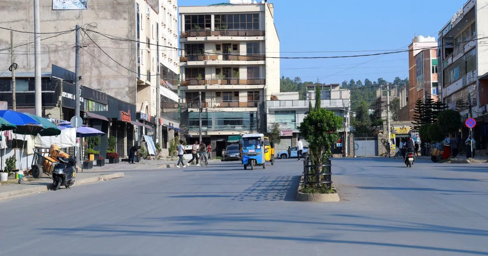

Forças pró-governo retomam Mekelle, capital do Tigré, na Etiópia
TPLF diz ter se retirado e transferido o governo regional; combates são a pior escalada desde a guerra de 2020–2022.

Forças pró-governo retomaram o controle de Mekelle, capital da região do Tigré, no norte da Etiópia, segundo informações divulgadas neste domingo (4) e reproduzidas pela CNN Brasil com base na Reuters. A milícia Forças de Paz do Tigré disse controlar a cidade, onde entrou no sábado, seguida pelo Exército etíope.
A Frente de Libertação do Povo do Tigré (TPLF), que lidera a aliança de oposição, informou ter se retirado e que o governo regional passará a operar temporariamente de outro local. Uma fonte humanitária e um morador confirmaram que a cidade está nas mãos do governo e de seus aliados.
A retomada é um revés para a TPLF, que lançou uma grande ofensiva em 23 de setembro. Analistas avaliam que os combates, os piores desde a guerra civil de 2020–2022, ameaçam virar um conflito regional mais amplo.
Adis Abeba rompeu relações com a Eritreia na semana passada, acusando-a de apoiar os rebeldes ao lado de Sudão e Egito; os três negam. O chanceler egípcio, Badr Abdelatty, disse que o país não está envolvido na crise interna etíope.